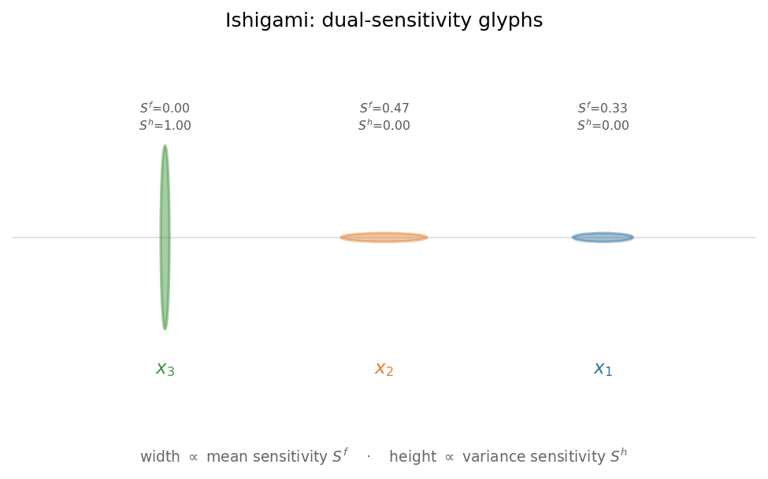
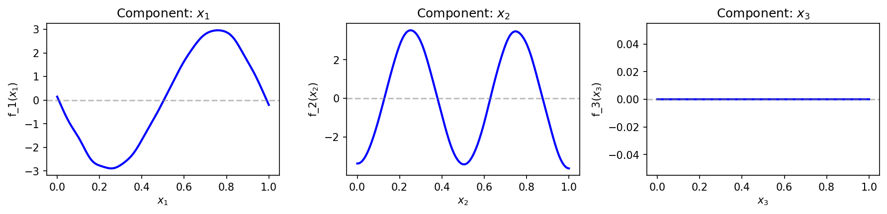
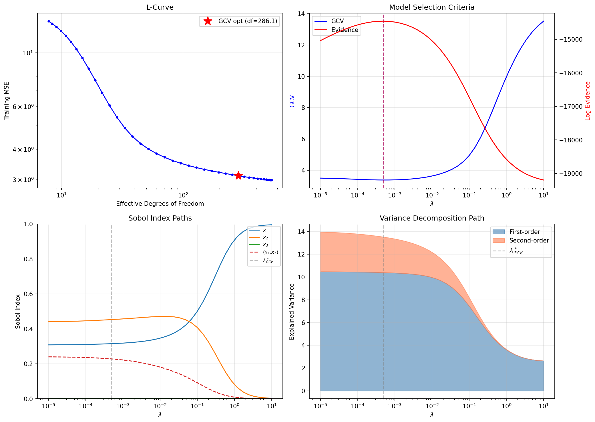
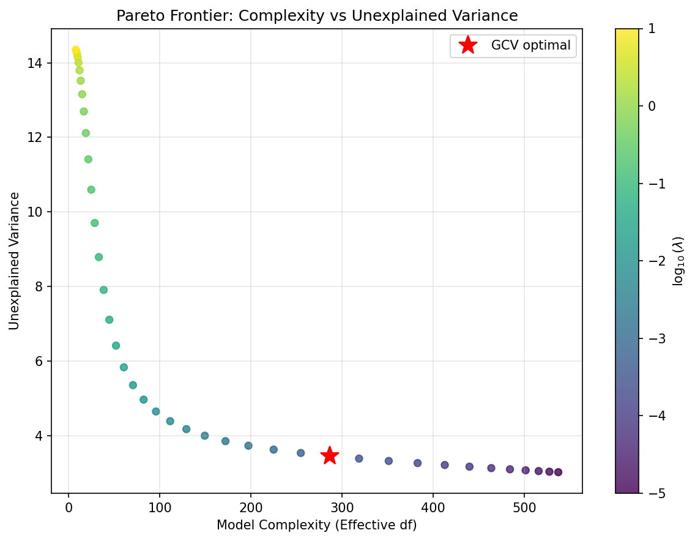
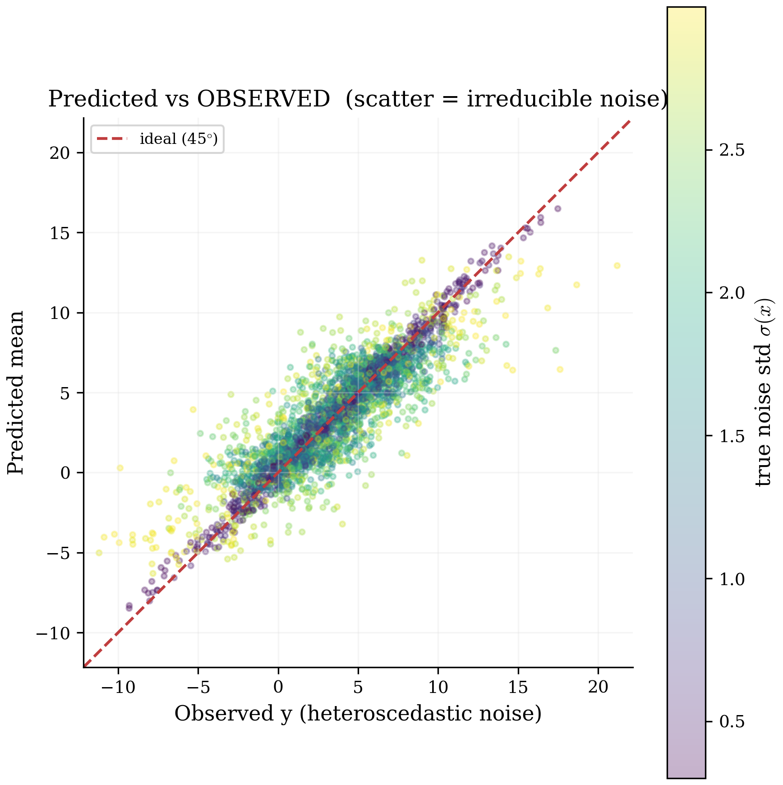
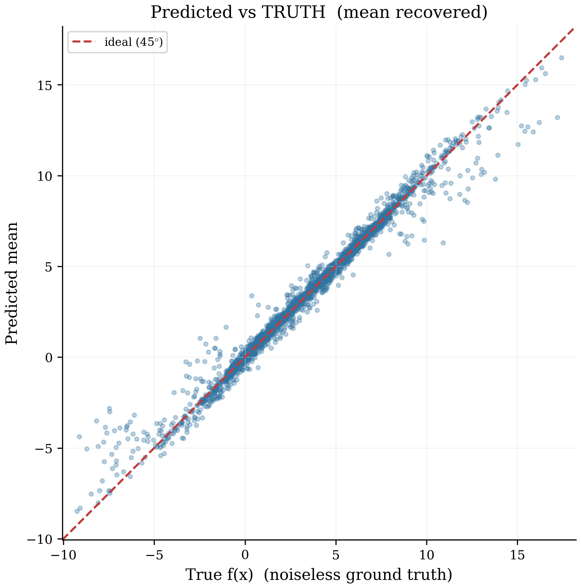
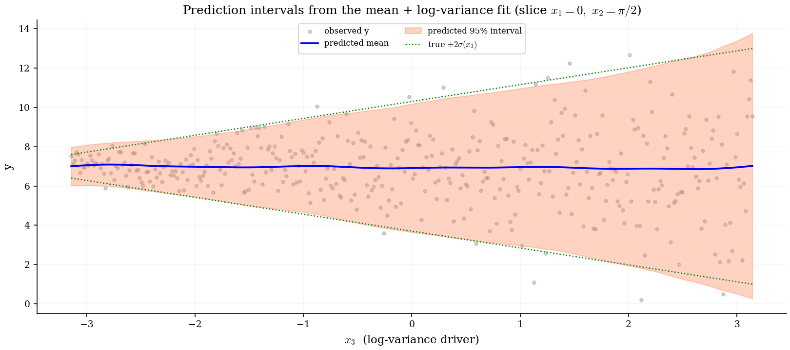
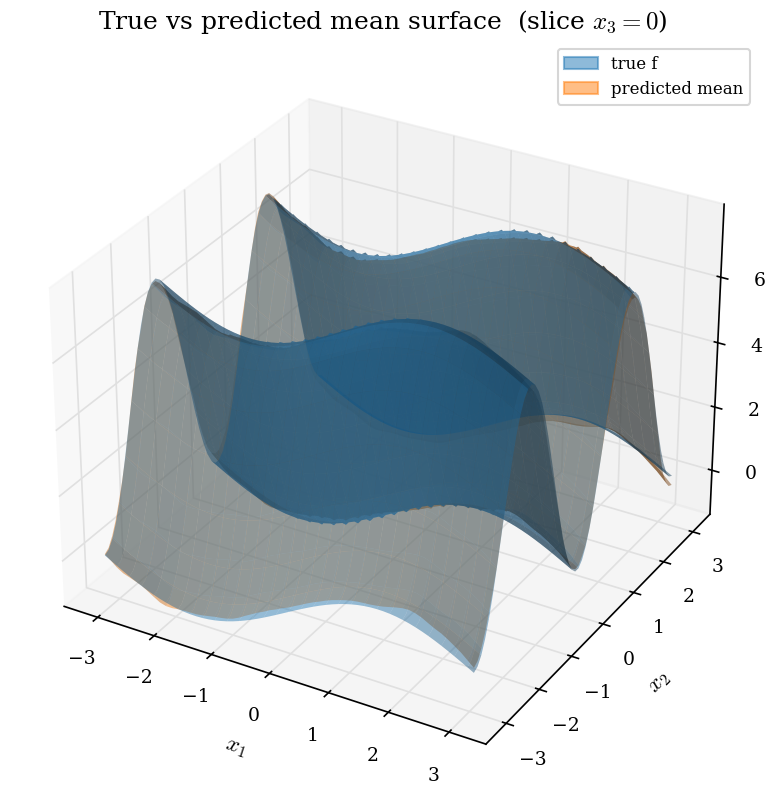
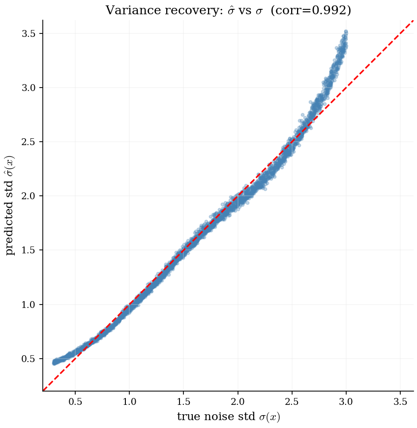

HiFi-ANOVA — a worked example on the heteroscedastic Ishigami function
A visual tour of what the toolbox produces from one fit: the dual mean+variance sensitivity spectrum, the learned effects, the regularization trade-offs, and how the fit holds up under noise.
The Ishigami function is a classic sensitivity-analysis benchmark. We use a heteroscedastic variant — the response is noisy, and the noise level itself depends on an input — because it exercises every part of the toolbox at once.
Why this example is instructive — two things about x₃:
It has zero first-order effect on the mean (it acts only through the x₁–x₃ interaction) but a non-zero total-order effect. A method that reports a first-order importance for x₃ is picking up noise.
It is a hidden variance driver: it carries no mean signal yet controls the entire noise variance — invisible to ordinary feature importance.
Everything below is produced by python examples/run_ishigami_heteroscedastic.py (7 000-point fit; all figures land in figures/).
1The dual Sobol spectrum — mean vs variance sensitivity
Because the fit is linear in the basis coefficients, sensitivity indices for both the conditional mean and the conditional variance are read directly off a single solve — one pair of numbers per variable.

Dual-sensitivity glyphs. Each variable is one ellipse: width ∝ its effect on the mean E[y|x], and height ∝ its effect on the variance Var[y|x]. x₁/x₂ are wide and flat (mean drivers); x₃ is tall and narrow — it barely touches the mean yet drives the entire noise variance, the hidden-driver signature. The shape tells the whole story at a glance.
2The learned first-order effects
The fitted one-dimensional effect of each variable, in quantile space.

x₁ recovers a sine, x₂ a squared-sine (two humps). x₃ is exactly flat — its spurious main-effect block was removed by first_order_pruning='bic', a group test that zeros an entire first-order block when the data does not support it. Plain ridge can only shrink such a block; it can never set it to zero.
3Regularization — choosing and understanding the penalty
Every quantity below comes from a single ridge factorization, so an entire regularization path is essentially free — no retraining.

Regularization path. Clockwise: the L-curve (fit vs complexity) with the GCV optimum starred; GCV & evidence agreeing on λ; the Sobol indices at every λ (note x₃ pinned at zero throughout); and the explained-variance decomposition by interaction order.

Pareto frontier. Unexplained variance vs model complexity (effective degrees of freedom), colored by λ. The GCV optimum sits at the elbow — where extra complexity stops buying accuracy.
4How good is the fit — under noise?
With heteroscedastic noise, a prediction-vs-observation plot cannot collapse to a line: its scatter is the irreducible noise. Because the data is synthetic we also know the noiseless truth, so we can separate mean recovery from noise.

Predicted vs observed y — colored by the true noise std σ(x). R² = 0.79, at the noise ceiling (not a weak fit); the points that stray farthest are the high-noise ones.

Predicted vs the true f(x) — a tight line, R² = 0.98. The mean is recovered well; the gap on the left is purely noise.

Prediction intervals from the mean + variance model. A 1-D slice (x₁ = 0, x₂ = π/2) so the mean is flat and only the noise changes with x₃. The 95% band = mean ± 2σ̂(x) from both models together; it widens with x₃ and tracks the true ±2σ (green dotted), covering the observed points.

True vs fitted mean surface (slice x₃ = 0). The true surface (blue) and the predicted mean (orange) overlap so closely they blend.

Variance recovery. Predicted noise std σ̂(x) vs the true σ(x) — correlation 0.99. The model does not just predict a value, it predicts a calibrated, input-dependent uncertainty.
5Verifying the fit
A single call, verify_model(...), runs the diagnostic workflow end-to-end and confirms the fit is internally consistent before its Sobol indices are trusted:
[PASS] Sobol additivity: first+second+third+residual = 1.000 (target 1.000)
[PASS] Sobol bounds: indices in [0,1], total-order >= first-order
[PASS] Fit quality (test R^2): R^2 = 0.802
[PASS] Calibration (coverage): cov90=0.89 cov95=0.95 var(z)=1.07
[PASS] Input correlation: correlation_level = 'clean'
[info] Pure-interaction variables: x3: zero first-order, nonzero total-order
=> ALL CHECKS PASSED
The [info] line is the payoff: the toolbox has correctly identified x₃ as a pure-interaction, hidden-variance variable — exactly the structure a single feature-importance number would miss.